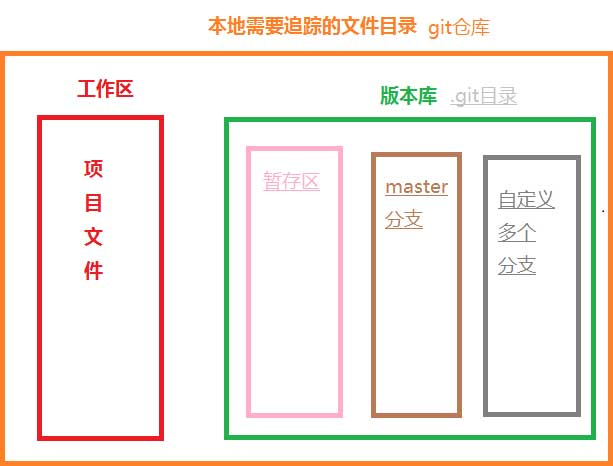

分布式版本控制系统
写项目总会面临改来改去或者多人同时做一个项目，做一些大型项目，总不能像之前一样，每次修改之后复制一份之前的包，以备还原，这个时候就要用到版本控制系统了。
目前有两大主流的版本控制系统
- 集中式版本控制系统，其代表就是SVN；
- 分布式版本控制系统，其代表就是Git；
作为一个coder，不会使用Git，那真是一件太糟糕的事情啦！
开足火力，攻下Git,合理的管理项目吧！
官方地址：Git官网
什么是Git
Git是一个开源的分布式版本控制系统，开发Git的哥们说，Git就是一个傻瓜式跟踪器；这估计是对Git最简单粗暴的定义了；这里就不在罗列Git的定义，发展，优缺点之类的了，网上随处可见。
既然是跟踪器，那么就是文件的修改，删除，新增都在Git上清晰可见，随时可以切换到之前的版本；
比如：周一写了一天的代码，提交运行之后没什么事情，周二去忙的别的了，周三产品经理让修改来了一大堆，你提交之后，放到线上跑了一天，周五的时候产品经理告诉你，要恢复到周一的版本，如果都没有备份之前的代码，这改起来是不是头很大。那么用Git就能简单，快速的恢复到之前版本；对于项目每次的改动的，利用Git来跟踪，让Git帮我们记住每次改动的地方，随时知道是谁在哪个地方改动了项目，随时跟踪项目的版本进度。
运行原理
简单的理解，就是在你存放项目的目录下建立一个叫.git的目录，用于存放项目的各个版本，这个叫版本库；
版本库的父目录就是一个git仓库，注意：父目录名不要是中文，否则会有莫名其妙的问题；
版本库里有暂存区和分支；
暂存区 就是暂时把要提交的文件放在这里。
分支可以建立多个分支，Git默认有一个master分支，也可以理解为主分支；你也可以建立一个新的分支，项目经过多次的修改后没问题，最后合并到主分支上；
这样，版本库里面的所有文件都可以被Git管理起来，每个文件的修改、删除，Git都能跟踪，以便任何时刻都可以追踪历史，或者在将来某个时刻可以“还原”。

使用方法
下载安装
这个就不多说了，安装有有很多自定义配置，需要了解的请点击。
基本信息设置
用户名
git config --global user.name "你的en名字"
邮箱
git config --blobal user.email "你的邮箱"
这里的名字和邮箱可以随便取，但是如果要把本地仓库推送至远程仓库，远程仓库就会显示你的用户名；
参数--blobal是一个全局的意思，就是在本台机器上你的所有Git仓库都会使用这个配置。当然，也可以对某个仓库进行不同的配置。
查看配置列表
git config -list
查看具体配置
git config <key>
key指具体的某一项配置，比如查看用户名：
git config user.name
创建仓库
git init
添加到暂存区
添加文件
git add "文件名"
添加被修改文件和新增文件，但不包括删除文件
git add .
添加被修改和删除文件，但不包括新增文件
git add -u
-u这个是--update的缩写
添加所有文件
git add -A
-A这个是--all的缩写
或者使用下面命令查看我们需要的参数
git add -h
或者使用下面命令在浏览器下查看git add说明文档，英文的喔
git add --help
其他命令也可以使用此方法查看详细文档
查看工作区状态
git status
可以看到工作区还有那些文件没有被添加到暂存区；
当然也可以给一个 -s参数，这样就能直观的文件的状态简览；
git status -s
状态码
- A: 你本地新增的文件（服务器上没有）
- C: 文件的一个新拷贝
- D: 你本地删除的文件（服务器上还在）
- M: 文件的内容或者被修改了
- R: 文件名被修改了
- T: 文件的类型被修改了
- U: 文件没有被合并(你需要完成合并才能进行提交)
- X: 未知状态
- ？：未被git进行管理